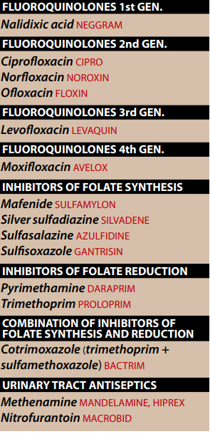
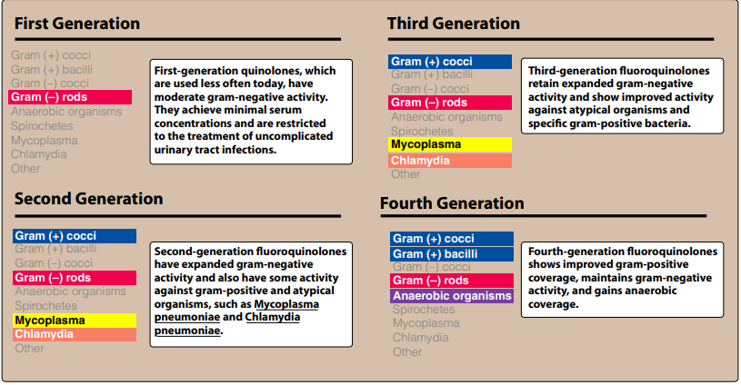
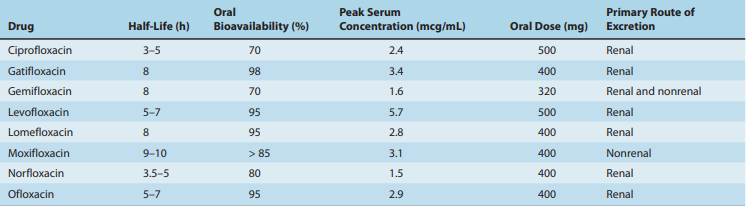
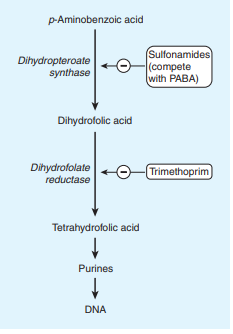
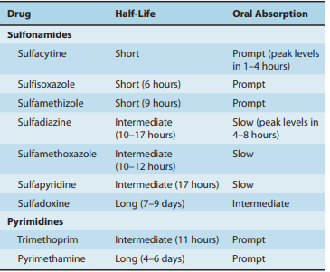
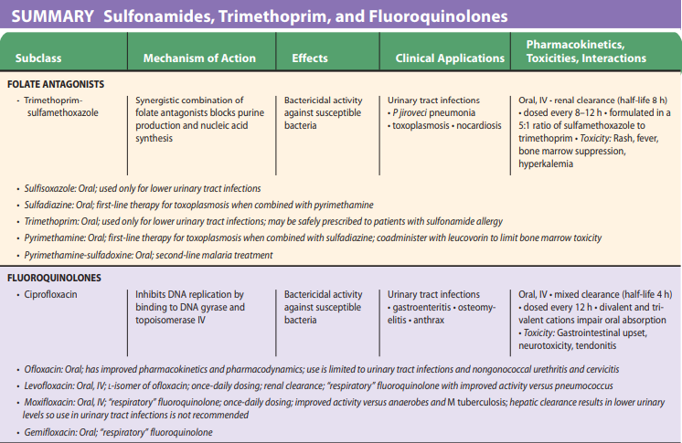
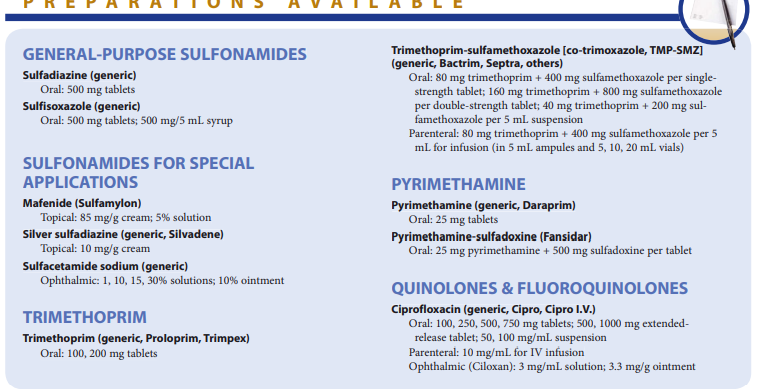
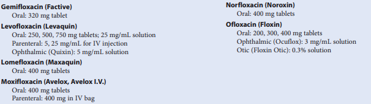

]
→ Naladixic acid is the predecessor to all fluroquinolones
→ Norfloxacin the first fluorinated quinolone
- rapidly followed by the development of ciprofloxacin
- offer greater potency
- broader spectrum of antimicrobial activity
- better safety profile than older quinolones and antibiotics
1.α.MECHANISM OF ACITON
→ enter the bacterium
- by passive diffusion
→ inhibit the replication of bacterial DNA
- by interfering with the action of DNA gyrase (topoisomerase II)
- topoisomerase IV — required by bacteria for cell division — during bacterial growth & reproduction
- change the configuration or topology of DNA]
- in G+ [streptococci] the opposite is true.
1.b.ANTIMICROBIAL SPECTRUM
→ Bactericidical activiy becomes more pronoucned
- as the serum drug concentration increases to approx. 30-fold
- G- such as
- Enterobacteriaceae , Pseudomonas species , Haemophilus influnzae , Moraxella catarrhalis etc
- gonorrhe but not syphilis
- good activity against some G+ such as
- Streptococus pneumonieae
→ Ciprofloxacin / norfloxacin
- against aerobic G- and atypical bacteria
- exhibit significant intracellular penetration
- ↑ activity against G
- 
1.c.Examples of clinically useful fluoroquinolones

1.Ciprofloxacin
→ against many systemeic infecitons
- with exception cuzed by methicilin-resistant [Staphylococcus aureus](MRSA)
- enterococci
- pneumonococci
- traveler diarreha caused by E.coli.
- is the most potent of the fluoroquinolones for Pseudomonas aeruginosa
- as an alternative to amimoglycosides
- may act synergastically with β-lactams
- typhoid fever in thrid-world countires
2.NORFLOXACIN
→ effective against both G-(including P.aeruginos and G+ (complicated and uncomplicated UTIs,prostatitits,traveler diarrhea(unlabeled use)
→ is not effective against systemic infenciton
3.Levofloxacin
→ is an isomer of olfoxacin
→ treatment of
- prostatis due to E .coli
- sexually transmittied diseases [exception of syphilis]
- alternative therapy in patients with gonorrhe
- skin infenction
- acute sinusitis
- actue exacerbation of chronic bronchitis
- community-asquired pneumonia
- excellent activity against S.pneumoniae respiratory infenctions.
4.Moxifloxacin
→ enhanced activity against G+
→ excellent activity against anaerobes
→ very poor activity against P.aeruginosa
→ does not concentrate in urine
- thus is not indicated for UTI's
1.d.Resistane
→ no plasmid-mediated resistance has been reported
→ MRSA, pseudomonas , coagulase negative staphylococci ,enterococci
- emerged due to chromosomal muatation.
- mutation in the baceterial DNA gyrase
- ↓ affinity of fluoroquinolones
- topoisomerase IV also undergoes mutation.
- ↓ intracellular concentration of the drugs in the bacterial cells linked to two mechanism
- ↓ number of porin proteins in the outer membrane of the resistant cell
- other mechanism associated with an energy-dependent efflux system in the cell membrane.
1.e.Pharmacokinetics
1.Absorption
- 35-70% orally admin. of Norfloxacin is absorbed.
- 85-95% orally admin. of other fluoroquinolones
- sucralfate
- antacids containing zinc,aluminum,magnesium
- interfere with the absorption of these antibacterial drugs.
→ binding to plasma proteins 10-40%
→ all fluroqu distribute well
- into all tissues and body fluids.
- high in bone,urine,kidney,prostatic tissue
→ also accumulates in macrophages and polymorphonuclear leukocytes
→ most excrected renally
- primarly by the liver,
1.f.Adverse Reactions
→ in general are very well tolerated
→ nausea , vommiting , diarrhea
→ headache , dizziness , epilepsy ,
→ phototoxicity
→ Contraindicated
- prolong QTc interval [arrythmias or patients taking antiarrythmics]
- antacis & cations
- theophylline [by inhibiting its metabolism]
III.SULFONAMIDES
III.A.Mechanism of action
→ synthetic analgos of PABA
→ compete with PABA subtrate for the bacterial enzymes
- dihydropteroate sythesase
- dihydrofolic acid
- and the formation of cofactor form.
III.B.Antibacterial spectrum
→ against selected Enterobacteria in the urinary tract
→ Sulfadiazine in combo with dihydrofolate reductase inhibitor Pyrimethamine
- is preffered against toxoplasmosis.
III.C.Resistance
→ only organism that synthesize their folate de novo are sensitive to sulfamides
- humans who synthesize critical folate cofactors from dietary folic acid are not affected
- bacteria can obtain folates from their enviroments are naturally resistant to these drugs.
[Organisms resistant to one member of this drug family are resistant to all]
→ due to
- alerted dihydropteroate synthase
- decreased cellurlar permability to sulfa drugs
- enhanced production of the natural substrate,Paba
III.D.Pharmacokinetics
1.ADMINISTRATION
→ most of them well absorbed after oral admin. via the small intestine
→ [sulfasalazine]- in intestinal flora splitted into
- sulfapyridine and 5-aminosalicylate
→ Silver sulfonamide or mafenide / acetate
- have been effective in ↓ burn-associated sepsis
→ bound to serum albumin in the circulation
→ extent of binding depends on the particular agent's pKa
→ thought body water
→ penatrate well CFS
→ can also pass placental barrier and enter fetal tissues
3.EXCRETION
→ eliminated by glomerular filtration and require close adjustments for renal dysfunction
→ depressed kideny funciton
- cause accumulation of both the parent compounds
- may also be eliminated on the breast milk
III.E.Adverse Effects
1.CRYSTALOURIA
- nephrotoxicity
- sulfisoxazole+sulfamethaxazole = are more soluble at urinary pH than the older sulfonamides (sulfadiazine)
- rashes
- angioedema
- Steven-Johnson syndrome
- hemolytic anemia (in patients with 6-phosphate dehydrogenase deficiency)
- of the anticoagulant effect of warfarin
- which results from displacements from binding sites on serum albumin.
5.KERNICTERUS
→ disorder may occur in newborn
- diplace bilirubin from binding sites on serum albumin
- bilirubin is the free to pas into the CNS,because the baby's blood-brain barrier is not fully developed.
- newborns and infant less than 2months (risk of kernicterus)
- should not be given to patients receiving methenamine [ for UTI's]--> (because condense with formaldehyde)
IV.TRIMETHOPRIM
→ potent inhibitor of bacterial dihydrofolate reductase
- antibacterial spectrum similar to other sulfonamides
- producing the combination called Cortimoxazole.
IV.A.Mechanism of action
→ active form of folate
- tetrahydro-derivative that is formed through the reduction of
- dihydrofolic acid by dihydrofolate reductase.
- decreasing availability of the tetrahydrofolate coenzymes.
- required for purine,pyrimide, amino acid synthesis.
IV.B.Antibacterial spectrum
→ similar to that of sulfamethaxazole
→ 20 to 50-fold more potent than the sulfonamide
→ may be used alone to treat acute UTI's and treatment of bacterial prostatis.
etc

V.Cotrimoxazole
→ trimehtoprin + sulfamethoxazole combination
- shows greater antimicrobial acitvity than of either drugs used alone
V.A.Mechanism of action
→ sygergy arise from
- inhibition of two sequential steps in the synthesis of tetrahydrofolic acid
- sulfamethoxazole inhibits the incorporation of PABA into dihydrofolic acid precursors
- and trimethoprim prevents reduction of dihydrofolate to tetrahydrofolate.
V.B.Antibacterial spectrum
→ broader spectrum of antibacterial action than the sulfa drugs
→ effective on treating UTIs and respiratory tract infenciton
→ activity versus MRSA
- community ascquired skin and soft tissues infenctions.
V.C.Resistance
→ is less frequently encountered than resistance to either of the drugs alone
V.D.Pharmacokientics
→ trimethoprim is more lipid soluble than sulfamethoxazole
- and also has a greater voluem of distribution
- a ratio in the plasma on twenty parts sulfamethaxazole to one part trimethoprim.
→ generally admin. orally
→ both drugs and their metabolites are excreted in the urine.
V.E.Adverse effects
→ reaction involving skin is very common and may be severe in eldelry
→ nause , vomiting, glossitis and stomatitis [are not usual ]
→ megaloplastic anemia , leukopenia , thrombocytopenia
- all these effects may preversed by the concurrent admin. of folinic acid [does not enter the microorganism]
→ Prolonged prothrobin times in patients receign both sulfamethoxazole and warfarin have been reported
→ plasma half-life of penytoin may be increased [due to inhibition of its metabolism]
→ methotrexate levels may rise due to displacement from albumin-binding site by sulfamethoxazole.

{kind=link}
{kind=link}
{kind=link}
{kind=link}
{kind=link}
{kind=link}
{kind=link}
{kind=link}